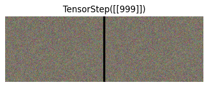
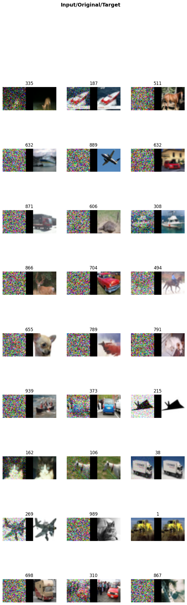
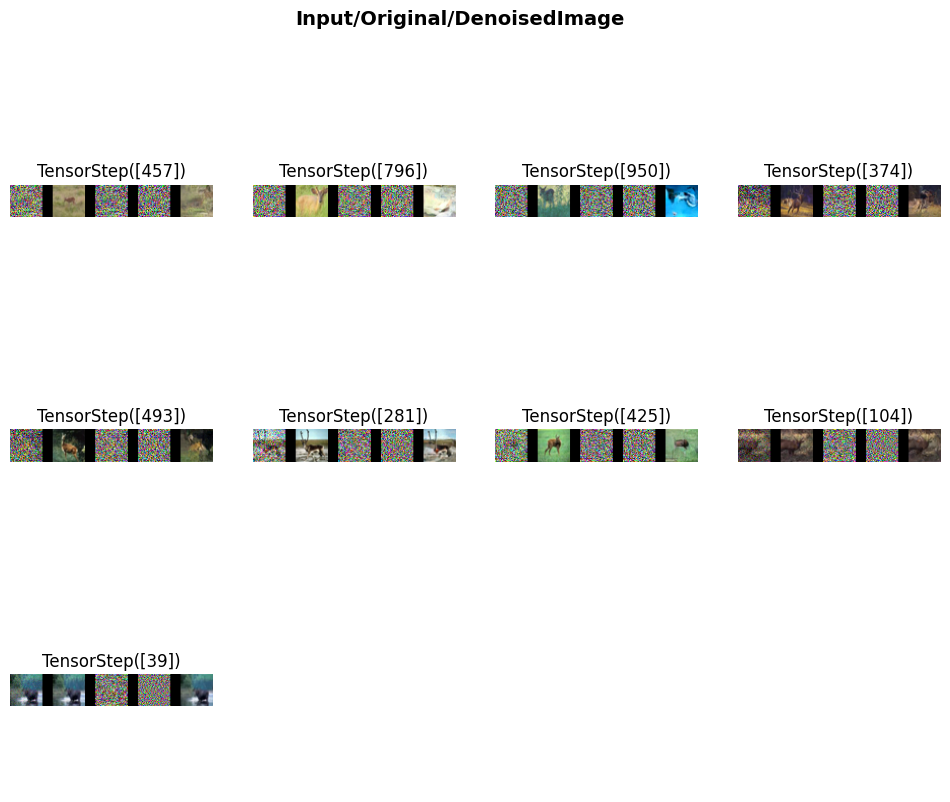

class TensorNoise(TensorImageBase):pass
class TensorStep(TensorBase): passWe create two new Tensor Types, one for our noise, and one for our timestep.
We would like normalize to denormalize our noise before showing it. This is so the noise in our image looks similar to the noise in our noised image.
@Normalize
def decodes(self, x:TensorNoise):
f = to_cpu if x.device.type=='cpu' else noop
return (x*f(self.std) + f(self.mean))norm = Normalize.from_stats(*imagenet_stats)
show_images(norm.decode(img))I patch ItemTransform here, so that it can work off of TypedTuples. Essentially if we have a DiffusionTuple, the transform will apply to that if it should apply to that type of tuple.
class ItemTransform(Transform):
"A transform that always take tuples as items"
_retain = True
# Only showing important code
def _call_tuple(self:ItemTransform, name, x, split_idx=None, **kwargs):
f = getattr(super(), name)
f2name='encodes' if name == '__call__' else 'decodes' if name == 'decode' else name
f2 = getattr(self, f2name)
if isinstance(f2,TypeDispatch) and f2[type(x)] is not None:
if split_idx!=self.split_idx and self.split_idx is not None: return x
y = f2(x, **kwargs)
else:
y = f(list(x), **kwargs)
return yThe general idea is to implement a named tuple, and use duck typing. In the future, we should look at the named tuple class and do something more similar to that.
class DiffusionTuple(fastuple):
def __new__(cls, *rest):
self=super().__new__(cls, *rest)
i=0
self.x=self[i]
if(isinstance(self[i+1],TensorImage)): self.x0=self[i:=i+1]
self.t=self[i:=i+1]
if(len(self)>i+1): self.y=self[i:=i+1]
if(len(self)>i+1): self.pred=self[i:=i+1]
return selfA little transform to make our tuple a DiffusionTuple
class ToDiffusionTuple(ItemTransform):
order=100
def encodes(self,xy):
return DiffusionTuple(*xy[:-1],TensorNoise(xy[-1]))This Transform expects y to contain an image, and just replaces it with noise. Our model tries to predict the noise in an image.
class LabelToNoise(ItemTransform):
order=101
def encodes(self,xy:DiffusionTuple):
y=xy.y
xy.y[:]=TensorNoise(torch.randn_like(y))
return xydiff_tuple=LabelToNoise.encodes(DiffusionTuple(img[0].detach().clone(),TensorStep(torch.tensor([[200]])),TensorNoise(img[0].clone())))We can access tuple elements by attributes. This is useful when you don’t know what index a particular value is located.
diff_tuple.x.shape,diff_tuple.t.shape,diff_tuple.y.shape(torch.Size([3, 320, 480]), torch.Size([1, 1]), torch.Size([3, 320, 480]))Now we have a way to create an image, and convert the label to noise.
norm.decode(diff_tuple).show(show_noise=True)<AxesSubplot:title={'center':'TensorStep([[200]])'}>Next, we need to go create a noised image, to pass to our model.
class Diffusion_P_Sampler():
def __init__(self,model,sampling_function):
self.device=sampling_function.device
self.model=model
self.sampling_function=sampling_function
# __call__ implemented, but not shown.
def iter_noise(self,x_t,ts,t_start):
i=0
while((ts>0).any()):
x,t=x_t[ts>0],ts[ts>0]
with autocast(device_type=self.device, dtype=x.dtype):
with torch.no_grad():
e = self.model(x,self.deconvert(t) if i!=0 else t_start)
x_t[ts>0]=self.sampling_function(x,e,t,t=t_start if i==0 else None)
ts[ts>0]-=1
i+=1
yield x_tNext we need to know how much noise to apply to each step.
class LinearNoiseSchedule:
"Schedule like used in DDPM"
def __init__(self,betas=None,n_steps=None,device='cuda'):
if betas is not None: self.n_steps=betas.shape[0]
if n_steps is None: self.n_steps=1000
if betas is None: self.betas = torch.linspace(0.0001, 0.02, self.n_steps,device=device)
self.alphas = 1. - self.betas
self.alpha_bar = torch.cumprod(self.alphas, dim=0)Lets graph the various values here, in order to see what happens. Pay particularly close attention to alpha_bar as that controls the balance betwen our signal(image) and our noise.
lns=LinearNoiseSchedule()
plt.plot((lns.betas).cpu())
plt.plot((lns.alphas).cpu())
plt.plot((lns.alpha_bar).cpu())
plt.legend(['betas', 'alphas','alpha_bar'])<matplotlib.legend.Legend at 0x7f74f2a22e00>Next is DDPM-style Q-sampling. This is pretty much used for all diffusion models, and is the process that takes us from and image to noise.
class DDPM_Q_Sampling():
def __init__(self,predicts_x=False,noise_schedule=LinearNoiseSchedule(),n_steps=1000,device='cuda'):
self.device=device
self.ns=noise_schedule
self.n_steps=n_steps
self.t_sched=torch.linspace(0,len(self.ns.alpha_bar)-1,n_steps,dtype=torch.long)[...,None,None,None]
def __call__(self,x,es,t):
t=self.t_sched[t]
a=self.ns.alpha_bar[t].to(device=x.device)
signal = (a ** .5)*x
noise = (1-a)**.5 * es
return signal + noisediff_trans = DiffusionSamplingTransform(DDPM_Q_Sampling(),lambda x:x)norm.decode(diff_trans(diff_tuple)).show()<AxesSubplot:title={'center':'TensorStep([[200]])'}>
Lets now test so make sure our noise is being generated correctly.
noise_tuple=LabelToNoise.encodes(DiffusionTuple(img[0].detach().clone(),TensorStep(torch.tensor([[999]])),TensorNoise(img[0].clone())))norm.decode(diff_trans(noise_tuple)).show(show_noise=True)<AxesSubplot:title={'center':'TensorStep([[999]])'}>These are not exactly the same as it is one noising step, but they are fairly close.
is_close(norm.decode(diff_trans(noise_tuple))[0],TensorImage(norm.decode(diff_trans(noise_tuple))[2]),eps=1e-02)TensorImage(True, device='cuda:0')Going from noise to and image, p_sampling
@patch
def __call__(self:DDPM_P_Sampling,x,es,ns_t,t=None):
t= self.t_sched[ns_t] if(t is None) else t[...,None,None,None]
n=torch.randn_like(x)
e,a,b=self._noise_at_t(es,t),self.ns.alphas[t],self.ns.betas[t]
signal = (x - e) / (a ** 0.5)
noise = b**.5 * n
return signal + noise
@patch
def _noise_at_t(self:DDPM_P_Sampling,es,t):
eps_coef = (1 - self.ns.alphas[t]) / (1 - self.ns.alpha_bar[t]) ** .5
return eps_coef* esWe implement DDIM sampling here, as it drastically reduces sampling time from 1000 steps to 50. Just generally helps us keep our sanity when trying to show our results.
@patch
def __call__(self:DDIM_P_Sampling,z,es,ns_t,t=None):
if(t is None): t=self.t_sched[ns_t]
tp1=self.t_sched[ns_t-1]
a,a_tp1=self.ns.alpha_bar[t][...,None,None,None],self.ns.alpha_bar[tp1][...,None,None,None]
if self.predicts_x:
xs=es
es=(z - (a)**.5 * xs)/(1-a)**.5
else: xs=(z - (1-a)**.5 * es)/ (a ** .5)
signal = a_tp1**.5*(xs)
noise = (1-a_tp1)**.5*es
return signal + noiseTraining a model
path = untar_data(URLs.CIFAR)m=Unet(dim=192+192//8,channels=3,).cuda()bs=128
n_steps=1000
diffusion_transform = DiffusionSamplingTransform(DDPM_Q_Sampling(),Diffusion_P_Sampler(m,DDPM_P_Sampling()))
dls=DataBlock((ImageBlock(),
ImageBlock(),
TransformBlock(type_tfms=[DisplayedTransform(enc=lambda o: TensorStep(o))]),
ImageBlock()),
n_inp=3,
item_tfms=[Resize(32)],
batch_tfms=(Normalize.from_stats(*cifar_stats),ToDiffusionTuple,LabelToNoise,diffusion_transform),
get_items=get_image_files,
get_x=[lambda x:x,lambda x:x,
lambda x: torch.randint(1, n_steps, (1,), dtype=torch.long)],
splitter=IndexSplitter(range(bs)),
).dataloaders(path,bs=bs,val_bs=2*bs)
dls.show_batch()
def mse_loss_weighted(ys,targ):
return torch.mean(targ.w_sched[...,None] * ((ys - targ).flatten(start_dim=1) ** 2))def snr(at): return at/(1-at)def continuous_weights(at):
weights = -snr(at[1:])/(snr(at[1:])-snr(at[:-1]))
return torch.cat((weights[0:1],weights))class WeightedLinSched(Callback):
def after_pred(self):
if(not hasattr(self,'ws')):
self.ws = continuous_weights(LinearNoiseSchedule().alpha_bar).clip(min=1)
self.ws /= self.ws.mean()
ts=self.learn.xb[1].flatten()
self.learn.yb[0].w_sched=self.ws[ts]learn = Learner(dls,m,mse_loss_weighted,opt_func=Adam,cbs=[FlattenCallback,WeightedLinSched])
learn = learn.to_fp16()
learn.fit_flat_cos(10,lr=2e-4,wd=0.)| epoch | train_loss | valid_loss | time |
|---|---|---|---|
| 0 | 0.049789 | 0.042322 | 04:39 |
| 1 | 0.044212 | 0.039284 | 04:39 |
| 2 | 0.041315 | 0.045253 | 04:40 |
| 3 | 0.040457 | 0.038427 | 04:39 |
| 4 | 0.039394 | 0.035517 | 04:40 |
| 5 | 0.039198 | 0.039416 | 04:39 |
| 6 | 0.039298 | 0.037537 | 04:39 |
| 7 | 0.038256 | 0.040432 | 04:39 |
| 8 | 0.038232 | 0.025152 | 04:40 |
| 9 | nan | 0.036510 | 04:38 |
next check show_results
learn.show_results()